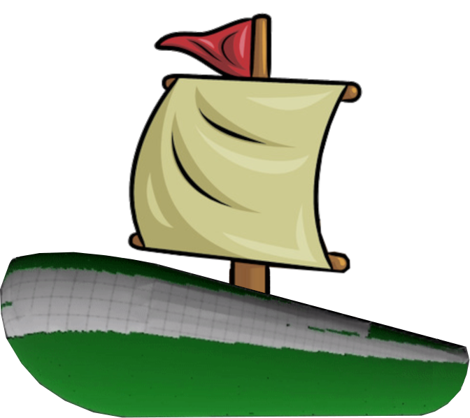
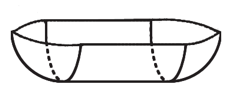

Ce projet est né de ma volonté de mettre en pratique et approfondir mes connaissances en RL sur un cas réel.
Cleaning Blob
Automatisation d'un robot par Reinforcement Learning
RL
Computer Vision
Environement simulé en 3D (Unity)
Recherche
J'ai alors choisit un robot, développé par la startup KeelCrab. C'est un robot télécommandé qui permet de nettoyer la coque des bateaux.
Il est maintenu contre la coque par un système d'aspiration et peut ête déplacé par l'utilisateur à distance.
Le processus, jusque là manuel, est long et fastidiuex, et semble pouvoir être automatisé.

J'ai donc développé un environement simulé, dans le logiciel Unity, communiquant avec un script python,
pour pouvoir entrainer des algorithmes d'apprentissage par renforcement (RL).
Modélisation de la coque du bateau :
Demi Capsule

Demi Capsule
Modélisation des algues :
Petis carrés verts
Petis carrés verts
Le package
peaceful-pie
permet alors de contrôler l'objet dans Unity à partir d'un script python : On peut maintenant entrainer notre agent.
J'ai entrainé un algorithme de PPO (Proximal Policy Optimization), en donnant simplement une récompense poru chaque carré d'algue nettoyyé.
On peut voir que l'agent à appris à se diriger vers les algues. Il a même appris, spontanément,
une trajectoire de nettoyage optimisée, en tournant de façon circulaire à partir du bord.